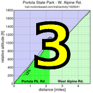

|
 |
 |
|
OLH
|
The most popular climb in the Bay Area, by far.
| results? | right here! |
| profile |  |
| distance | 3.35 miles (5.4 km) |
| climbing | 1290 ft (393 meters) |
| grade | 7.31% |
| where? | see below |
| when? | 09 Oct 2010 |
| what time | registration 9:00 to 10:00 climb starts @ 10:10 |
| RSVP | check back later! |
| waiver | Please fill one out before the climb! |
| how? |  |
| how much? | $10 (free for juniors and those with volunteer credit) |
| why? | why not? |
| coordinator | |
| volunteers | sign up! |
| aerial view | Stanford Cycling |
| weather | Weather Underground Weather Bonk |
| other times | Strava UltraCycle Beat the Clock (6-2007) Beat the Clock (2-2006) |
| deja-vu? | 1995(4) 1996(X) 2006(2) 2009(2) |
| BikeMap | |
Sorry, folks! Our insurance requires all riders wear helmets during the climb, and we follow the USA Cycling rule against ear buds or other head phones. Rock to tunes before the climb, perhaps, but we need riders to pay attention to what's happening during the climb...
We'll meet at the Windy Hill parking area off Portola Valley Road. There may be some parking at the lot, but we recommend parking elsewhere, for example in Woodside, then riding to the registration area.
From Windy Hill, we'll send small groups to the base of OLH, from which we'll start groups of 15 to avoid impacting local traffic. Registration opens at 9:15am, closing at 10am. Please don't go to OLH directly; we want groups to all start at OLH. Faster riders will start in earlier groups, more endurance-oriented riders in later groups.
We'll record starting times, names, and numbers where the climbing begins at the bridge on OLH, the traditional start.
Here's a map of the area. We'll have food a bit up the road on Skyline to avoid creating congestion at the intersection of OLH and Skyline Blvd.
A particularly interesting way back to the Windy Hill parking lot from the finish is to descend the Windy Hill trail. Most people, however, will likely want to descend Highway 84 instead. We want to avoid descending OLH to reduce our congestion footprint.
Volunteers make Low-Key tick! Without them, we no longer function. Please sign up for any week in the series using our new volunteer form! Thanks!!!
{kind=link}